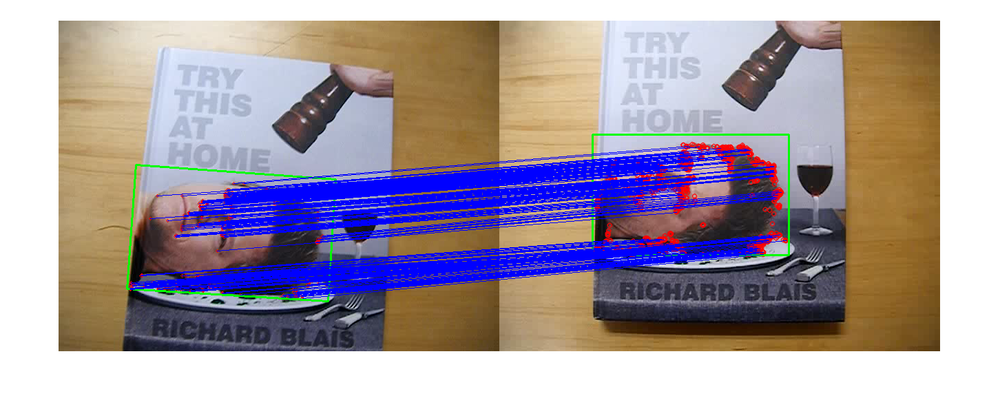

Feature homography based planar tracking
Example of using features2d framework for interactive video homography matching. ORB features and FLANN matcher are used. The actual tracking is implemented by PlaneTracker class.
Inspired by http://www.youtube.com/watch?v=-ZNYoL8rzPY
Video: http://www.youtube.com/watch?v=FirtmYcC0Vc
Select a textured planar object to track by drawing a box with a mouse.
Sources:
function feature_homography_track_demo(vid) % video file, and a default target to track [x,y,w,h] win = []; if nargin < 1 vid = fullfile(mexopencv.root(), 'test', 'blais.mp4'); assert(exist(vid, 'file') == 2, 'Missing video file'); if true win = [135 165 285 175]; % face else win = [136 0 366 433]; % book end elseif isempty(vid) vid = 0; end % open video feed, and get first frame cap = cv.VideoCapture(vid); pause(1); assert(cap.isOpened(), 'Failed to open video'); frame = cap.read(); assert(~isempty(frame), 'Failed to read frames'); % prepare plot paused = false; tframe = zeros(size(frame), class(frame)); % target frame + drawings hImg = imshow([frame, tframe]); % create and initialize tracker tracker = PlaneTracker(); if ~isempty(win) onRect(win); end % create ROI region selector if ~mexopencv.isOctave() onHelp(); roi = RectSelector(hImg); roi.clip = true; roi.callback = @onRect; else %HACK: RectSelector not Octave compatible %HACK: function handle to nested function not supported in Octave roi = struct('isDragging',@()false); end % listen to keyboard input if ~mexopencv.isOctave() %HACK: function handle to nested function not supported in Octave set(ancestor(hImg,'figure'), 'WindowKeyPressFcn',@onType); end % main loop while ishghandle(hImg) playing = ~paused && ~roi.isDragging(); if playing % read new frame frame = cap.read(); if isempty(frame), break; end end out = [frame, tframe]; % track and draw keypoints and boundary of target in new frame if playing tracked = tracker.track(frame); if ~isempty(tracked) tr = tracked(1); out = cv.circle(out, tr.pt1, 2, 'Color',[255 0 0]); out = cv.polylines(out, tr.quad, 'Closed',true, ... 'Color',[0 255 0], 'Thickness',2); % draw matches out = cv.line(out, ... bsxfun(@plus, tr.pt0, [size(frame,2) 0]), tr.pt1, ... 'Color',[0 0 255]); end end % display result set(hImg, 'CData',out); if playing drawnow; else pause(0.1); % slow down a bit if paused end end cap.release(); if isobject(roi), delete(roi); end % --- Callback functions --- function onRect(rect) %ONRECT Callback for ROI selector % % onRect(rect) % % ## Input % * __rect__ selected rectangle [x,y,w,h], or empty % if isempty(rect), return; end % selection must be made in left image (current frame) rect = cv.Rect.intersect(rect, [0 0 size(frame,2) size(frame,1)]); if cv.Rect.area(rect) < 1, return; end % track new target disp('New target...') tracker.clear(); tracker.addTarget(frame, rect); % draw keypoints and boundary in target frame if ~isempty(tracker.targets) t = tracker.targets(1); tframe = cv.drawKeypoints(t.image, t.kpts, 'Color',[255 0 0]); tframe = cv.rectangle(tframe, t.rect(1:2), t.rect(3:4), ... 'Color',[0 255 0], 'Thickness',2); else tframe(:) = 0; end % un-pause paused = false; end function onType(hfig, e) %ONTYPE Event handler for key press on figure switch e.Key case {'q', 'escape'} close(hfig); case 'h' onHelp(); case {'space', 'p'} disp('Toggle pause...'); paused = ~paused; case {'c', 'r'} disp('Clearing tracker...'); tracker.clear(); tframe(:) = 0; end end function onHelp() %ONHELP Display usage help dialog h = helpdlg({ 'Select object(s) to track using the mouse.' 'Hot keys:' ' q - quit' ' h - help' ' p - pause' ' c - clear targets' }); % wait for user to accept dialog set(h, 'WindowStyle','modal'); waitfor(h); end end
New target...